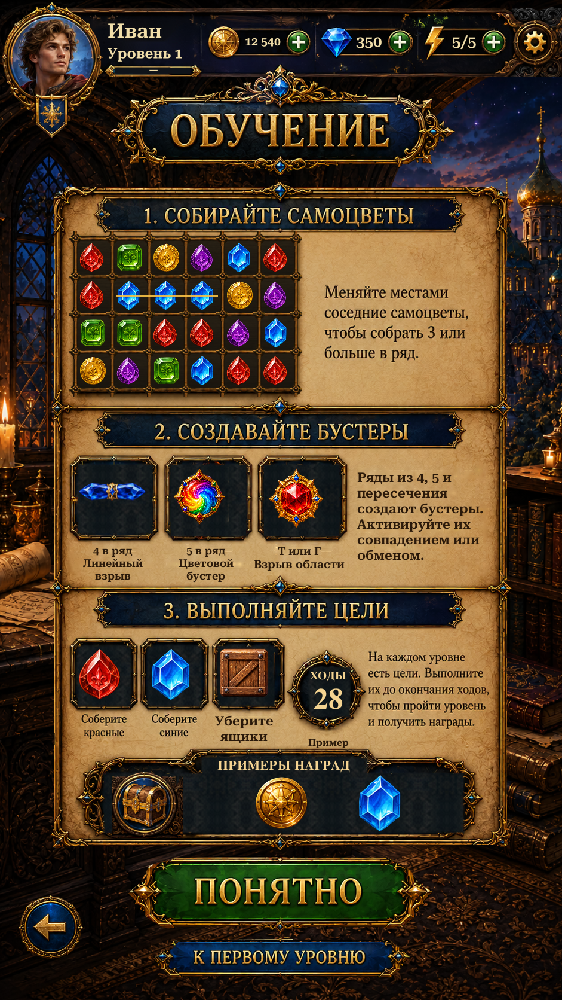

Native Unity implementation of the supplied Tutorial image. The parchment and embedded decorative frames are one isolated panel; the title and buttons are separate source assets. Gem illustrations use the exact sprites loaded by Gameplay.
The shared player header shows saved values. Lesson headings open detailed instructions; Back and Got It return to the originating page. The first-level button opens Pre-Level. During a paused round, Help preserves the board and offers Return to Round. Captures use isolated saves and simulated phone dimensions/safe areas. The original reference and previous version are labelled separately.
Instructions use the implemented match rules: four creates a line special, five a color special, T/L an area blast. Crates replace the unsupported shield goal. Rewards and move count are examples. Reconstructed scenery and repaired illustration surfaces remain approximate.

Changes and validation · Remaining reference differences · Verification results · Extracted assets